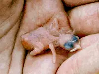
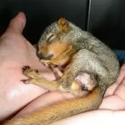
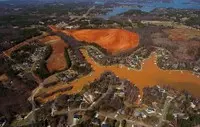

Frequently Asked Questions

Injured/Orphaned Birds?
Contact "Carolina Waterfowl Rescue" who is dedicated to the rescue and rehabilitation of migratory birds.
Learn More

Injured/Orphaned Mammals?
Licensed wildlife rehabilitators provide care for an animal to a point in which it can be released back into its natural environment.
Learn More

Water Pollution?
Contact the "Catawba Riverkeeper" who's Mission Statement is to educate and advocate to protect the Catawba-Wateree River Basin's lakes, rivers and streams for everyone who depends on and enjoys them.
Learn More